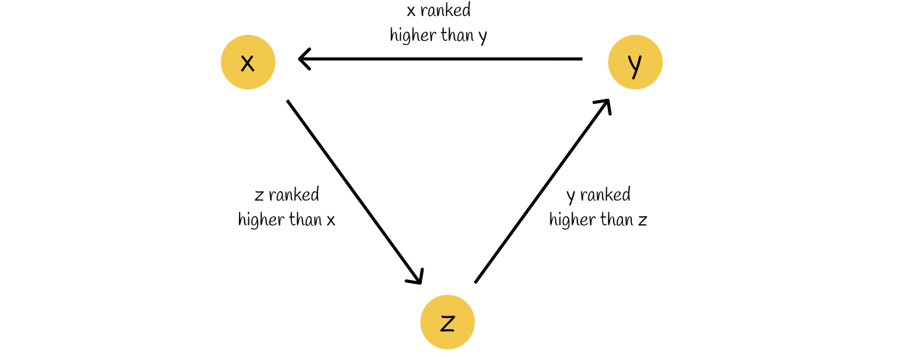

The task focuses on building a ranking system to evaluate and rank trading accounts based on their trading performance. The ranking system uses various financial metrics to assess profitability, stability, and consistency. Some of the core metrics include:
- PnL (Profit and Loss): Total profit or loss for each trade.
- ROI (Return on Investment): Measures the percentage return of each trade.
- Sharpe Ratio: Measures the risk-adjusted return of the account.
- Maximum Drawdown (MDD): Measures the largest loss from a peak to a trough.
- Win Rate: The proportion of profitable trades relative to total trades.
The system uses a weighted approach to calculate scores based on these metrics, helping to rank accounts objectively. The task involves:
- Data Preprocessing: Loading and parsing trade history data.
- Metric Calculation: Calculating the financial metrics for each account.
- Ranking System: Applying a weighted scoring system to rank accounts.
Here's an example of how the ranking system evaluates performance:
This system provides valuable insights into which accounts are performing the best based on multiple factors, helping in making informed decisions.